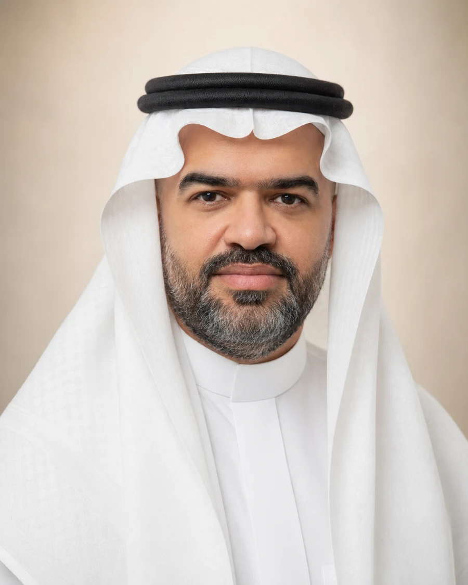

مدير تنفيذي
تحديد أهداف الشركة، بناء الاستراتيجيات، الإشراف على الوظائف الرئيسية، تحليل السوق والمخاطر ودعم قرارات النمو.
شركة رهْوة العالمية للتطوير والاستثمار
قائد تنفيذي ومتخصص في التخطيط الاستراتيجي وإدارة المشاريع وسلاسل الإمداد
خبرة عملية تجمع بين الإدارة التنفيذية، تطوير الأعمال، إدارة المشاريع، التوريد والعمليات، مع اهتمام بالابتكار وتحويل الأفكار إلى مبادرات قابلة للتنفيذ والقياس.

تنقلت الخبرة بين إدارة المشاريع، التموين وسلاسل الإمداد، الإدارة العامة والقيادة التنفيذية. هذا التنوع كوّن قدرة عملية على ربط الاستراتيجية بالتنفيذ، ومتابعة الأداء، وإدارة الموردين والميزانيات والفرق، وبناء حلول تتعامل مع بيئات تشغيلية متغيرة.
يرتكز الأسلوب المهني على التخطيط المنظم، اتخاذ القرار المبني على البيانات، إدارة المخاطر، تطوير الإجراءات، وتحسين الجودة مع الحفاظ على توازن واضح بين متطلبات التشغيل والنتائج الاستراتيجية.
أدوار مهنية تدرجت من تأسيس وإدارة الأعمال إلى إدارة المشاريع والتموين ثم الإدارة التنفيذية، مع مسؤوليات مباشرة في التخطيط، العمليات، الموردين، الميزانيات، المخاطر والأداء.
تحديد أهداف الشركة، بناء الاستراتيجيات، الإشراف على الوظائف الرئيسية، تحليل السوق والمخاطر ودعم قرارات النمو.
تخطيط المشروع، إدارة الموارد والفريق والميزانية، متابعة التقدم، وإدارة التغيير والمخاطر حتى تحقيق الأهداف.
التفاوض مع الموردين، ضمان الجودة وشروط التسليم، تنسيق الدعم اللوجستي، وتحليل البيانات لتحسين العمليات.
إدارة الأعمال اليومية، تطوير فرص السوق، التعامل مع العملاء والشركاء، وتحسين الإجراءات الداخلية.
مختارات من الإنجازات الواردة في السيرة المهنية، وتوضح خبرة في تأسيس الأعمال، خطوط الإنتاج، مشاريع الإمداد، وتطوير القدرات التشغيلية.
إنشاء خط إنتاج لوجبات الحجاج بطاقة تتجاوز أربعة ملايين وجبة سنويًا.
إنشاء خط لتغليف عبوات زمزم المخصصة للنقل بطاقة إنتاجية تبلغ عشرة ملايين عبوة سنويًا.
تأسيس وإدارة وفادة العالمية ورهْوة العالمية للتطوير والاستثمار.
تأسيس وإدارة إدارة التموين في هدية الحاج والمعتمر للأعمال اللوجستية والغذائية والمياه.
إنشاء مصنع للتمور باستخدام التغليف بالغاز الخامل للمحافظة على المنتج.
تنفيذ مشاريع من دولة الصين في مجالات مختلفة ضمن خبرة تجارية وتشغيلية دولية.
مجموعة من الدراسات والرؤى التنفيذية التي أعددتها حول قضايا حضرية وتنموية، من معالجة الزحام والنقل في المدن إلى تطوير مكة، الاستثمار، والسياحة المستدامة.
رؤية لتحويل مكة إلى مدينة ذكية موسمية مستدامة عبر منظومة مترابطة من النقل، الإعاشة، الصحة الميدانية، التبريد، التحول الرقمي والحوكمة، مع خريطة طريق تنفيذية ومؤشرات أداء.
إطار تنفيذي لمعالجة الزحام خلال 2025–2030 يجمع الحلول البنيوية والتنظيمية والتقنية والسلوكية، مع الحوكمة والتمويل ومؤشرات الأداء وإدارة المخاطر.
عرض تصوري لمنظومة مترو مكة يركز على التكامل بين النقل الحضري وخدمة الحجاج والمعتمرين، مع تصور لأربع خطوط و89 محطة وثلاثة مراكز صيانة ومراحل تنفيذ متتابعة.
تصور لمنصة تجمع صناع القرار والمستثمرين لتسريع تحويل الفرص التنموية في مكة والمشاعر المقدسة إلى مشاريع قابلة للتعاقد والشراكة.
رؤية لتحويل السياحة الموسمية في عسير إلى نموذج سياحي ذكي ومستدام يعمل طوال العام، مع نموذج تشغيلي وآليات تمويل ومؤشرات أداء وخارطة طريق.
مختارات من المشاريع التي تعكس اهتمامًا بالبنية التشغيلية، الاستدامة، الخدمات الذكية وتجربة المستفيد.
مفهوم لمركز لوجستي واسع النطاق يخدم مكة والمشاعر المقدسة عبر التخزين والنقل وسلاسل التبريد.
تصور لمرفق إنتاج غذائي عالي السعة يجمع الأتمتة وسلامة الغذاء والمراقبة التشغيلية.
ربط حماية الهوية التاريخية باقتصاد التجربة والحرف والمتاحف والتقنيات التفاعلية.
نظام لتتبع وحفظ الأمتعة يجمع RFID والخزائن الرقمية والتنبيهات لتحسين الأمان وتدفق الخدمة.
أعمال في الأوقاف والحوكمة والقيادة والذكاء الاصطناعي ومكة، تربط المعرفة بالممارسة وصنع القرار.
من التكوين إلى التمكين: الحوكمة والأداء والابتكار.
مقاربة تجمع الفقه والمالية والإدارة.
تطبيق مبادئ الرشاقة على المؤسسات الوقفية.
الذكاء الاصطناعي والتحليلات في إدارة الوقف.
الشورى والعدالة والمساءلة وصلتها بالقيادة الحديثة.
عمل توثيقي في التاريخ والعمران والتحولات.
تجمع المؤهلات بين العلاقات العامة، إدارة المشاريع، المخاطر، الحوكمة، التخطيط الاستراتيجي، مؤشرات الأداء وسلاسل الإمداد.
جامعة الملك عبدالعزيز — المملكة العربية السعودية